通用型VF控制算法
创建于2021-2-27
该项目完成于2020-10，原创
该项目完成于2020-10，原创
VF控制是一种标量控制方法，常用于异步电机的控制。由于该算法是在电机稳态模型上推导得出，因此动态性能较磁链定向控制要差。但是VF控制简单易用，对电机参数不敏感，这些优点使其广泛应用于一些性能要求较低的场合，如风机、水泵的控制。
VF控制一般只支持异步电机，并不支持永磁同步电机和同步磁阻电机。永磁同步电机应用广泛，同步磁阻电机近些年也在飞速发展，如果VF控制能够支持这两款电机的控制，就可以大大提高调试便捷性，提高用户体验，同时避免使用电感参数等，提高控制可靠性。
本算法是一种通用型的电机驱动算法。使用本通用型VF控制算法可以实现对异步电机、永磁同步电机、同步磁阻电机的控制。本算法无需使用电机的电感参数，只依靠定子电阻参数就可以实现较好的控制效果。在对低速性能要求不高的情况下，使用估计的定子电阻值就可以实现电机驱动。

VF控制无法用于同步电机，从根本上来讲，是由于振动的问题导致同步电机无法稳定运行。结合上图，可以建立VF控制的数学模型，从该模型中可以分析出振动的来源。上图中，ψs为定子磁链，ψr为转子磁链，θ为定子磁链和转子磁链的夹角。根据推导，可以知道，常规的VF控制算法中存在一个振荡环节，当电机状态（如速度或负载转矩）发生变化时，就可能会导致电机输出的电磁转矩发生振动，从而引起电机振动。本通用型VF控制算法，就是消除了振荡环节的影响，从而可以实现电机稳定运行，同时可以同时支持异步电机、永磁同步电机和同步磁阻电机的控制。